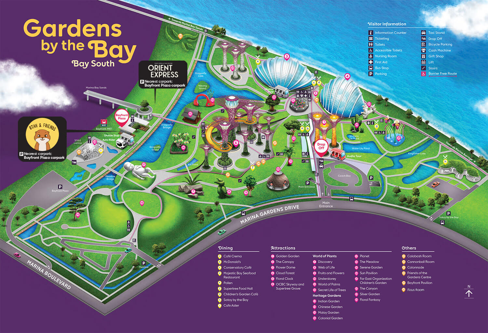

Gardens by the Bay
Flower Dome
Enter a world of perpetual spring, where unique plants bloom. Step into the Flower Dome and stand in awe of nature. Spectacular and innovative, it is the largest glass greenhouse in the world as listed in the 2015 Guinness World Records! Be amazed by changing display of flowers and plants from the Mediterranean and semi-arid regions.
For more information, click here.
To purchase tickets, click here.
Cloud Forest
Step into a realm high in the mountains. Enter the Cloud Forest, a mysterious world veiled in mist. Take in breath-taking mountain views surrounded by diverse vegetation and hidden floral gems. And learn about rare plants and their fast-disappearing environment.
For more information, click here.
To purchase tickets, click here.
Supertree Grove
Stand in awe of the amazing Supertrees. Measuring between 25 and 50 metres tall, Gardens by the Bay's Supertrees are designed with large canopies that provide shade in the day and come alive with an exhilarating display of lights and sounds at night. Stand in awe amidst these iconic giants, stroll along the 22-metre-high OCBC Skyway and enjoy panoramic vistas of the Gardens and the Marina Bay skyline at our new Supertree Observatory.
For more information, click here.
To purchase tickets for OCBC Skyway and Supertree Observatory, click here.

Map of the Area
To download the map, click here.
{kind=link}